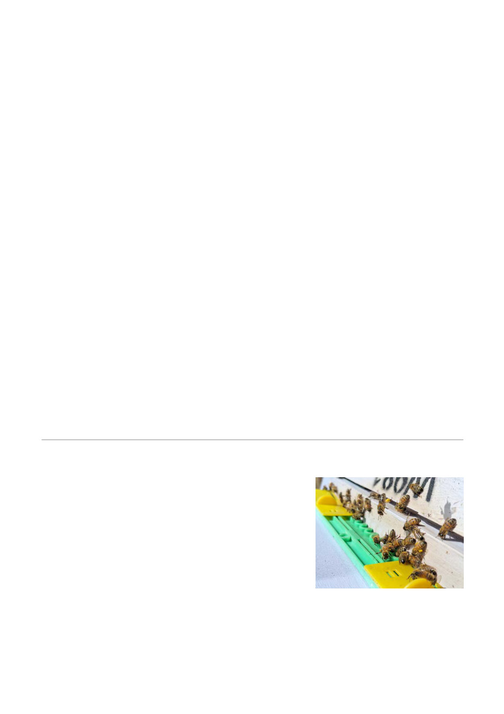

Smell is extremely important for bees. Their antennae contain olfactory receptors, which allow them
to detect scents from flowers, pheromones from other bees, and chemicals in their hive. Smell is
also crucial for communication. The queen releases pheromones to signal her presence and
reproductive status. Workers use pheromones to alert others about danger, mark paths to food, and
identify intruders. Smell is also vital in communicating the location of food. and recruiting foragers to
collect it.
Taste helps bees decide which flowers to visit. Bees have taste receptors on their mouth, antennae,
and on their feet! When landing on a flower, a bee can taste the nectar before feeding. Bees can
distinguish between different sugars and are sensitive to sucrose, which is common in nectar. They
can also detect bitter substances, helping them avoid toxins and spoiled nectar.
Touch is used by bees to sense their surroundings inside the hive. Tiny hairs and sensors on their
bodies let them feel vibrations, the presence of other bees, and changes in air currents. The
antennae also have touch sensors. Touch is important for social activities like grooming, feeding,
and building honeycomb cells. During the waggle dance, bees use touch and vibrations to interpret
directions to food sources.
Bees can detect the Earth's magnetic field, which helps them navigate and find their way back to the
hive. This may be due to magnetoreceptors, possibly involving iron granules in their bodies.
Bees do not hear like humans; instead, they sense sound as vibrations. The Johnston’s organ in the
antennae is tuned to detect these signals. Bees sometimes use sound for communication. The
piping sounds made by the queen is one example. However it is hard to equate the bees very basic
sense of vibration with the more advanced sense of hearing as we know it.
Bees can sense temperature and humidity which are important in maintaining the hive environment.
Bees also detect carbon dioxide, which has a number of applications. Increasing carbon dioxide
levels inside the hive could signal overcrowding. Bees also us their carbon dioxide senses when
defending their hive. Any beekeeper who has been on the receiving end of a serious aggressive
encounter with bees can testify that attacking bees often aim for the face, which is where the
carbon dioxide usually comes from in most animals predators!
About the Author - Bruce Ward is an experienced beekeeper with over 40 years of dedicated
service to the beekeeping industry. Bruce is a member of the Geelong Beekeepers Club Inc.
Varroa Advice
At the July meeting, John Bemelmans presented our 5th
"Queen Caging/Brood breaks" module, and Stephen Davey the
6th "Summer Brood Removal" Varroa education module aimed
to help members deal with the arrival of Varroa in the area.
Our website page "Varroa management"
(https://gbkc.au/Main.asp?_=~cid~485) is updated regularly as
our new modules are presented and also with a wide array of
other interesting information.
Ian Ashman will present Module 7 - "Hard/Synthetic
Chemicals" at the forthcoming August meeting.